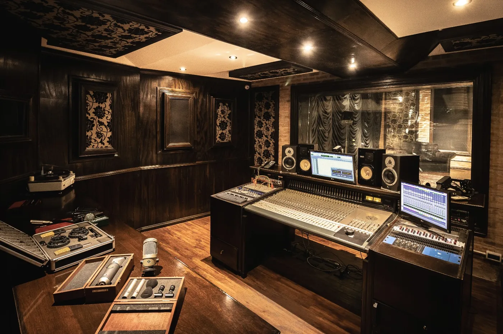

Terciario oficial · A-1441
Viví de la música.
En serio.
Carreras terciarias oficiales de sonido, producción musical, música y canto. 30 años formando profesionales en Buenos Aires y a distancia.
Carreras terciarias
Título oficial.
Elegí tu camino.

Sonido a Distancia
Producción y sonido 100 % online, con clases en vivo y título terciario oficial. La única carrera de este tipo oficializada en Argentina.
Conocer la carrera →Sonido Presencial
La tecnicatura de sonido con prácticas en nuestros estudios de CABA desde el primer día.
Conocer la carrera →Músico Profesional
Instrumento, ensamble, composición y arreglos, con salida profesional y título oficial.
Conocer la carrera →Cantante Profesional
Canto individual y grupal, ensamble y producción, con título oficial del Ministerio.
Conocer la carrera →
Sonido a Distancia · MDQ
La teoría a distancia y las prácticas en Dadson Studios, Mar del Plata. Mismo título oficial.
Conocer la carrera →Certificaciones y alianzas


Cursos y certificaciones
Formatos cortos,
certificados en serio
Curso de Sonido
Cinco meses, modalidad mixta y triple certificación para dar tus primeros pasos en el sonido.
Ver detalles →Mediciones Acústicas
Cuatro clases virtuales de acústica aplicada: medí y mejorá cualquier espacio.
Ver detalles →Pro Tools · AVID
La certificación oficial AVID en dos cursos: PT101 + PT110, en un AVID Learning Partner.
Ver detalles →Test vocacional exprés
Tres preguntas.
Tu carrera.
Antes de decidir
Vení a conocernos.
Es gratis.
Visitá el instituto en una recorrida guiada o sumate a un encuentro informativo online. Conocé los estudios, los docentes y el plan de estudios antes de dar el paso.
Conocé el instituto